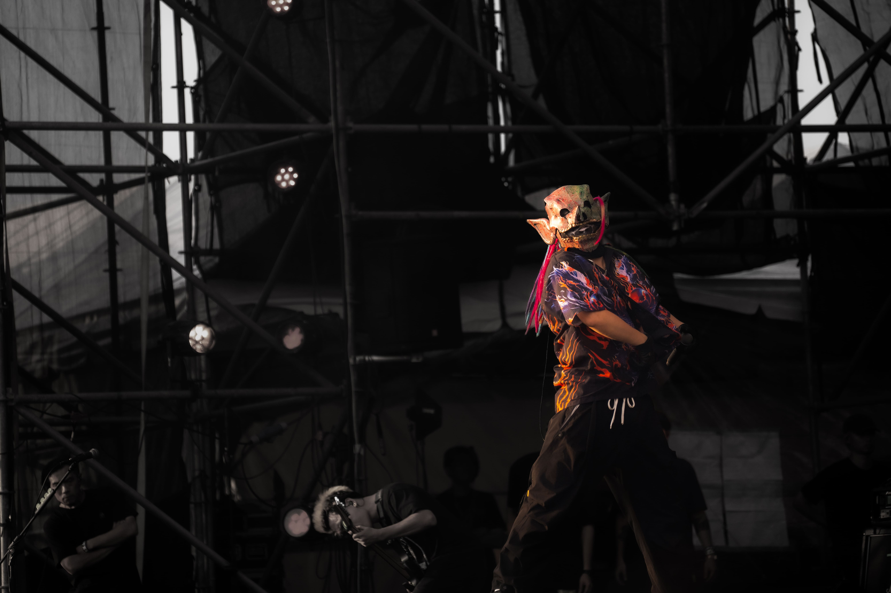
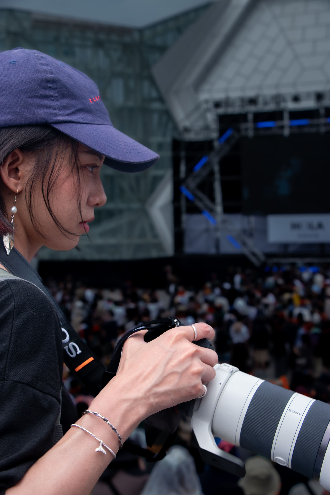
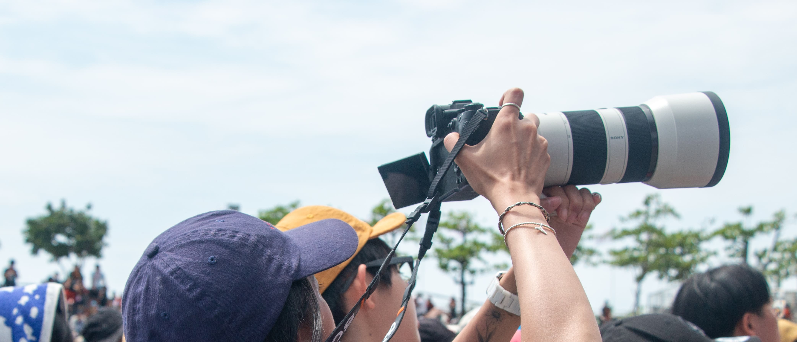
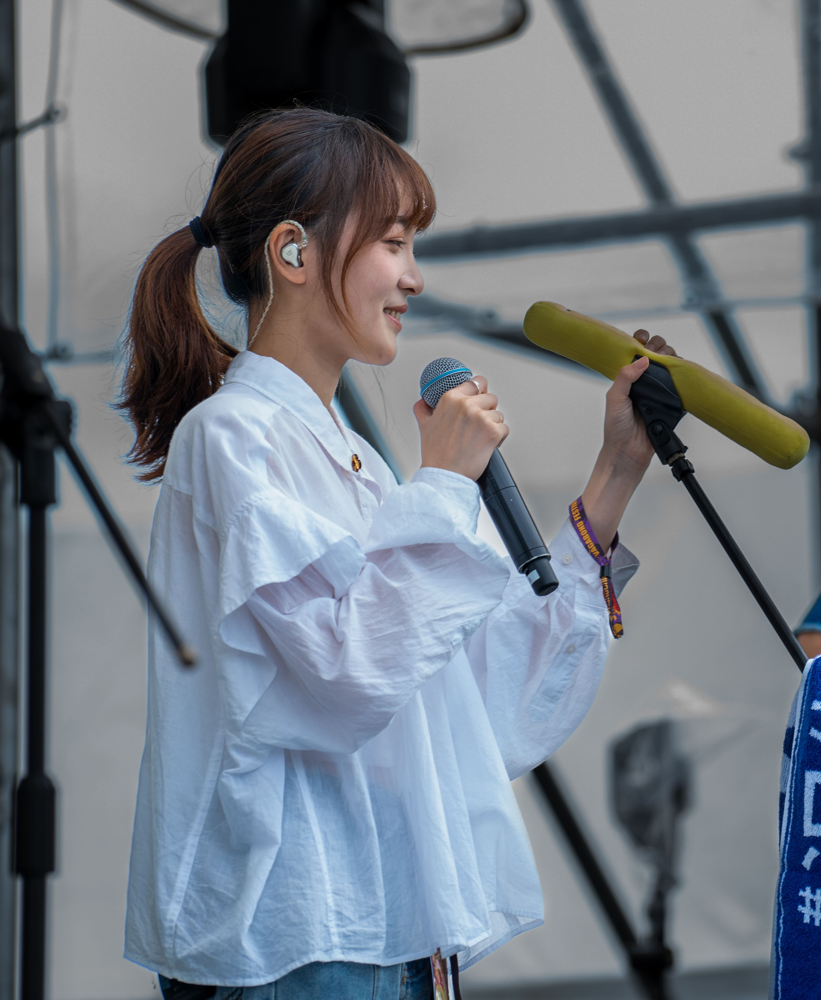
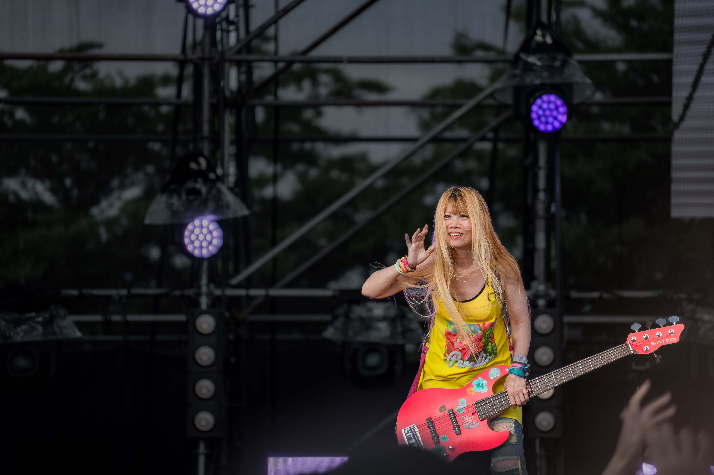
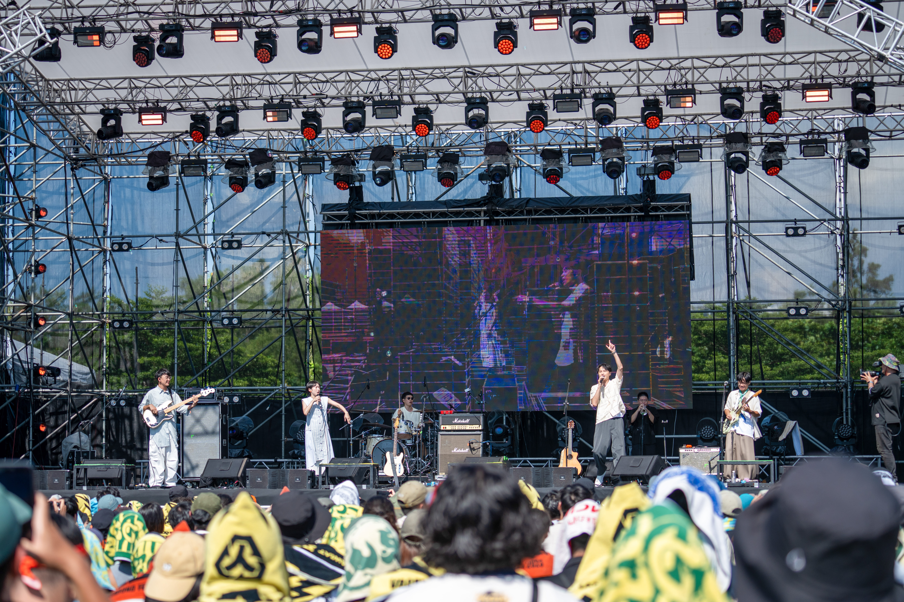
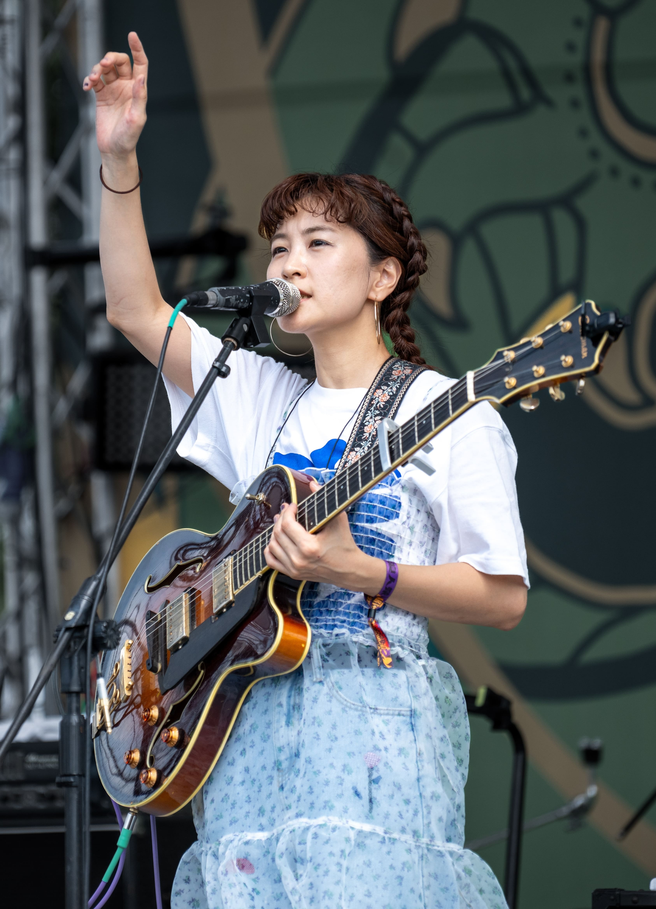

SELECTED WORKS
LIVE / 2024


BEHIND THE LENS
I capture the moments that exist between the lights,
the sound, and the crowd.
From the intensity of the stage to the quiet moments behind it, I document the atmosphere of live music through photography.

音楽の熱量や、その瞬間にしか生まれない表情を写真に残しています。ライブステージだけではなく、アーティストの自然な姿や、会場の空気感も切り取ります。
LET'S WORK TOGETHER
Your music.
Your stage.
Your moment.



